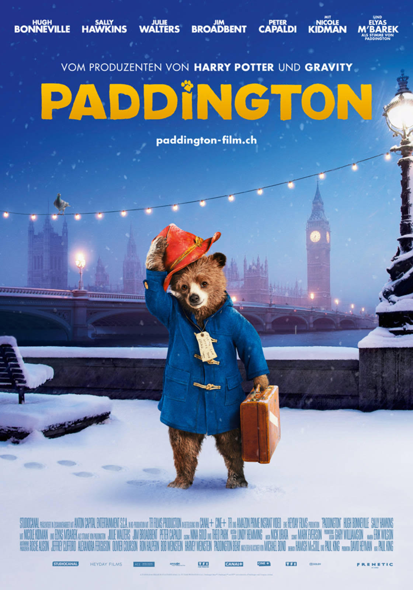

Джуманджі: Поклик джунглів. Частина1. Рік виходу - 1995.
Джуманджі: Поклик джунглів. Частина 2. Рік виходу - 2017
Ведмедик Паддінгтон — герой книги англійського письменника Майкла Бонда і однойменного дитячого серіалу. У 1975 році створили мультфільм про нього. Також компанія Cinar зняла мальований мультсеріал Пригоди ведмежати Паддінгтона. Існує два фільма про пригоди цього ведмежатка, які дуже подобаються і дітям, і дорослим.
Джуманджі 1 і 2
Ведмедик Паддінгтон — герой книги англійського письменника Майкла Бонда і однойменного дитячого серіалу. У 1975 році створили мультфільм про нього. Також компанія Cinar зняла мальований мультсеріал Пригоди ведмежати Паддінгтона. Існує два фільма про пригоди цього ведмежатка, які дуже подобаються і дітям, і дорослим.
Ведмедик Паддінгтон — герой книги англійського письменника Майкла Бонда і однойменного дитячого серіалу. У 1975 році створили мультфільм про нього. Також компанія Cinar зняла мальований мультсеріал Пригоди ведмежати Паддінгтона. Існує два фільма про пригоди цього ведмежатка, які дуже подобаються і дітям, і дорослим.
На початок